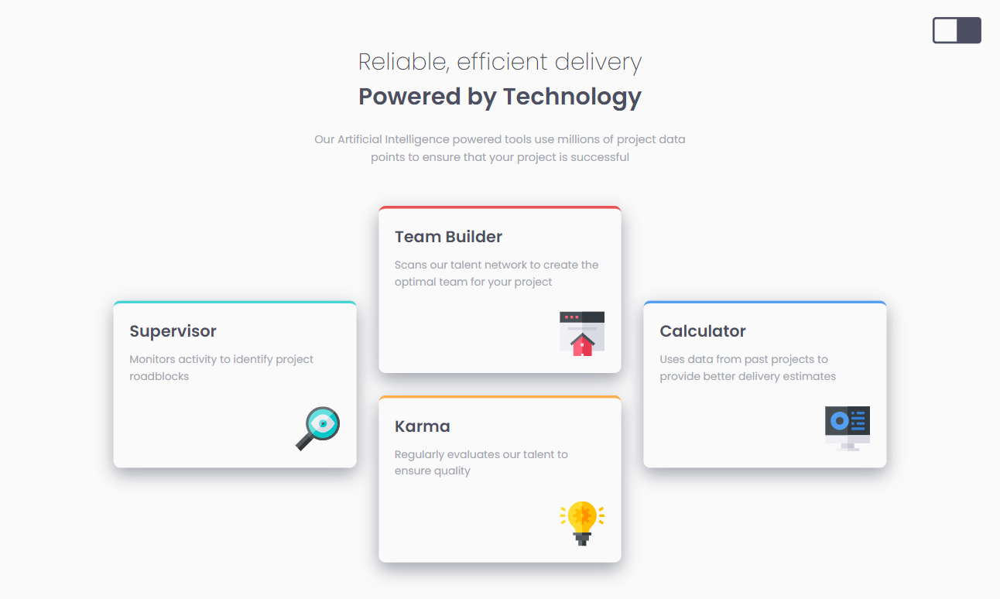
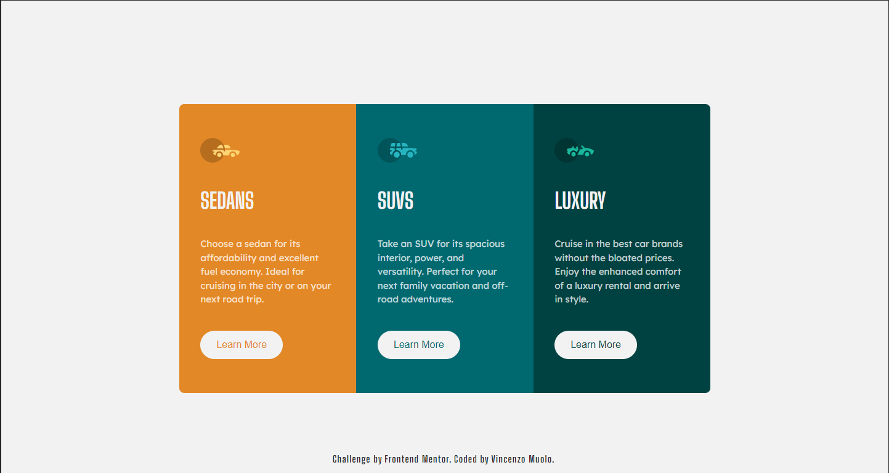

<section id="more_about" class="card">
   <section class="card__images">
      
      
      
      
   </section>
   <section class="card__text hidden"></section>
</section>
<section class="card card--alternate">
   <div class="images-alternate hidden">
      <div>
         
      </div>
      
   </div>
   <section class="card__text card__text--alternate hidden"></section>
</section>

<!-- SCSS CODE
 main {
   width: 100%;
   background-color: var(--primary);
   display: flex;
   flex-direction: column;
   .card {
      width: 100%;
      display: grid;
      padding-block: 20vh;
      margin-inline: auto;
      place-content: center;
      grid-template-columns: 90%;
      grid-template-rows: repeat(2, fit-content);
      grid-auto-flow: row;
      gap: 2em;
      border-radius: 0.1em;
      background-color: var(--primary_light);
      @include breakpoint("medium") {
         grid-template-columns: 60% 30%;
      }
      @include breakpoint("x-large") {
         grid-template-columns: 50% 35%;
      }
      &__images {
         position: relative;
         display: grid;
         height: fit-content;
         grid-template-columns: 25% auto;
         grid-template-rows: repeat(3, 1fr);
         column-gap: 0.75em;
         row-gap: 0.5em;
         & > img {
            width: 100%;
            height: 100%;
            object-fit: cover;
            object-position: center center;
            position: relative;
            cursor: pointer;
            filter: saturate(0.75);
         }
         & > img.active {
            grid-row: 1/4;
            grid-column: 2/3;
            cursor: default;
         }
      }

      &__text {
         color: var(--primary);
         padding-top: 0;
         @include breakpoint("x-large") {
            padding-inline: 1em;
         }
         font-size: clamp(0.75rem, calc(0.75rem + 0.5vw), 1.25rem);
         & > h3 {
            font-weight: 600;
            text-transform: uppercase;
         }
      }
      &--alternate {
         position: relative;
         height: fit-content;
         gap: 0.5em;
         @include breakpoint("medium") {
            grid-template-columns: 90%;
         }
         & > .images-alternate {
            height: 10em;
            width: auto;
            display: grid;
            grid-template-columns: 25% 75%;
            gap: 0.25em;
            overflow: hidden;
            & > div {
               height: 100%;
               overflow-y: auto;
            }
            & > .desktop-image {
               height: 100%;
               object-fit: cover;
               object-position: center center;
            }
         }
         & > .mobile {
            overflow-y: scroll;
         }
         & > .card__text--alternate {
            grid-row-start: 2;
            grid-column: 1/-1;
         }
      }
   }
}  -->

<!-- 
function change_image(selected_image) {
   // prettier-ignore
   const images = document.querySelectorAll("img[data-img]");
   images.forEach((image) => {
      if (image == selected_image) {
         image.classList.add("active");
      } else image.classList.remove("active");
   });
}
 -->
